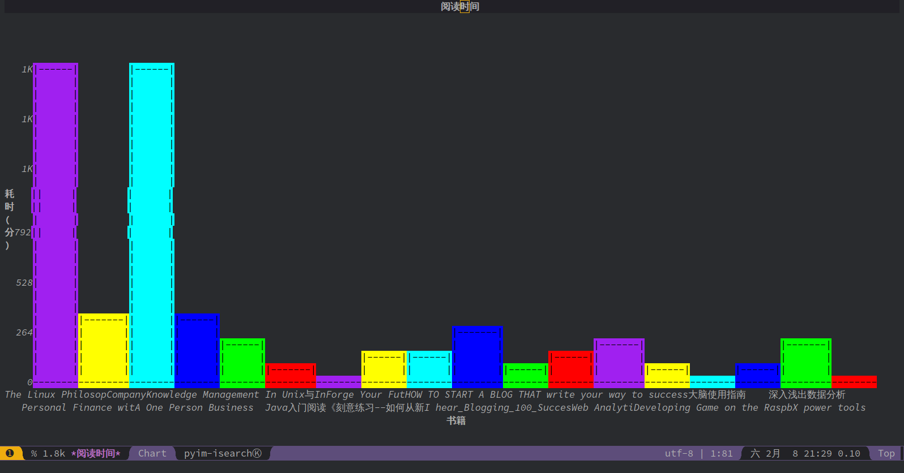

用直方图展示阅读时间分布情况
今天发现了一个Emacs内置库叫 chart,居然可以帮我们在Emacs中画直方图，直接把我震惊了。
这个库的接口非常简单，只有一个函数 chart-bar-quickie,关于用法可以参见它的doc-string
chart-bar-quickie is a compiled Lisp function in ‘chart.el’. (chart-bar-quickie DIR TITLE NAMELST NAMETITLE NUMLST NUMTITLE &optional MAX SORT-PRED) Wash over the complex EIEIO stuff and create a nice bar chart. Create it going in direction DIR [‘horizontal’ ‘vertical’] with TITLE using a name sequence NAMELST labeled NAMETITLE with values NUMLST labeled NUMTITLE. Optional arguments: Set the chart’s max element display to MAX, and sort lists with SORT-PRED if desired.
刚好最近我在尝试记录阅读书籍的时间，于是就想着可以试试直方图展示一下阅读各本书的时间。
有了 chart 做图，那么下面最重要的就是如何获取书籍和阅读时间了。
我把书籍阅读的信息存在 books.org 目录中，其中每个一级标题就是书籍名称。通过查看org的函数列表，我发现一个 org-clock-get-table-data 似乎非常满足我的要求。
org-clock-get-table-data is a compiled Lisp function in
‘elpa/org-plus-contrib-20191209/org-clock.el’.
(org-clock-get-table-data FILE PARAMS)
Get the clocktable data for file FILE, with parameters PARAMS.
FILE is only for identification - this function assumes that
the correct buffer is current, and that the wanted restriction is
in place.
The return value will be a list with the file name and the total
file time (in minutes) as 1st and 2nd elements. The third element
of this list will be a list of headline entries. Each entry has the
following structure:
(LEVEL HEADLINE TAGS TIMESTAMP TIME PROPERTIES)
LEVEL: The level of the headline, as an integer. This will be
the reduced level, so 1,2,3,... even if only odd levels
are being used.
HEADLINE: The text of the headline. Depending on PARAMS, this may
already be formatted like a link.
TAGS: The list of tags of the headline.
TIMESTAMP: If PARAMS require it, this will be a time stamp found in the
entry, any of SCHEDULED, DEADLINE, NORMAL, or first inactive,
in this sequence.
TIME: The sum of all time spend in this tree, in minutes. This time
will of cause be restricted to the time block and tags match
specified in PARAMS.
PROPERTIES: The list properties specified in the ‘:properties’ parameter
along with their value, as an alist following the pattern
(NAME . VALUE).
最终的代码如下：
(let* ((org-file "~/我的GTD/books.org") (clock-table-data (with-temp-buffer (insert-file-contents-literally org-file) (org-mode) (org-clock-get-table-data "BOOKS" '(:scope 'file :maxlevel 1)))) (time-consum-data (nth 2 clock-table-data)) (books (mapcar #'cadr time-consum-data)) (books (mapcar (lambda (book) (decode-coding-string book 'utf-8)) books)) ;使用utf-8解析，否则是乱码 (times (mapcar (lambda (l) (nth 4 l)) time-consum-data))) (chart-bar-quickie 'vertical' "阅读时间" books "书籍" times "耗时(分)"))
